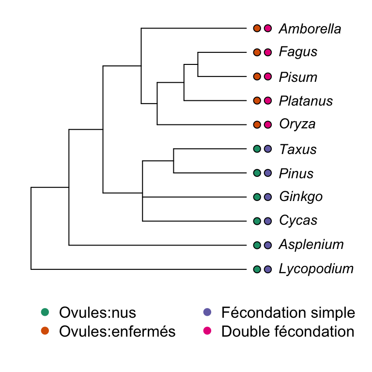

3 Une introduction aux méthodes comparatives phylogénétiques
Les méthodes comparatives phylogénétiques ont été introduites par Joseph Felsenstein en 1985. L’idée des méthodes comparatives phylogénétiques était de corriger la non-indépendance des espèces dans les tests statistiques en raison de leurs histoires évolutives partagées. En effet, deux espèces peuvent se ressembler non pas parce qu’elles vivent dans le même environnement mais parce qu’elles sont étroitement liées. Considérez la phylogénie des angiospermes suivante.
Figure 3.1: land plant phylogeny
Il est clair que Fagus (hêtre) et Pisum (pois) sont plus susceptibles de partager des caractéristiques similaires par rapport à Asplenium (une fougère), car ils partagent un ancêtre commun plus récent. En d’autres termes, leurs histoires évolutives sont partagées sur une période plus longue qu’avec Asplenium. Ainsi, ils ont plus de chances d’avoir des traits plus similaires (et en fait, ils en ont). Par exemple, prenez deux caractères, l’ovule et le type de fécondation, au sein de ce groupe.

En ignorant la phylogénie, nous pourrions être tentés de voir une forte corrélation entre ces deux caractères. En effet, les états entre les deux caractères montrent une correspondance parfaite. En utilisant les statistiques de tableau de contingence standard, nous pourrions faire un test exact de Fisher :
##
## Fisher's Exact Test for Count Data
##
## data: matrix(c(5, 0, 0, 6), ncol = 2)
## p-value = 0.002165
## alternative hypothesis: true odds ratio is not equal to 1
## 95 percent confidence interval:
## 2.842809 Inf
## sample estimates:
## odds ratio
## InfLe test suggère que l’association est hautement significative. Cependant, nous savons que les comparaisons faites ne sont pas complètement indépendantes. En réalité, les deux caractères n’ont évolué qu’une seule fois, et ce, le long de la même branche.
Une façon plus appropriée de poser la question serait “quelle est la probabilité que deux caractères aient évolué le long de la même branche ?”. Cela peut également être calculé en utilisant un tableau de contingence, mais cette fois en prenant les branches de la phylogénie comme unités d’observation.
Dans cet exemple, il y a 18 branches et les deux caractères n’ont évolué qu’une fois et sur la même branche. Le tableau de contingence en considérant les changements le long des branches ressemble à ceci :
| Changement dans le trait 2 | Pas de changement dans le trait 2 | |
|---|---|---|
| Changement dans le trait 1 | 1 | 0 |
| Pas de changement dans le trait 1 | 0 | 17 |
Avec ce tableau, le test exact de Fisher donnera le résultat suivant :
##
## Fisher's Exact Test for Count Data
##
## data: matrix(c(1, 0, 0, 17), ncol = 2)
## p-value = 0.05556
## alternative hypothesis: true odds ratio is not equal to 1
## 95 percent confidence interval:
## 0.4358974 Inf
## sample estimates:
## odds ratio
## InfVous pouvez voir que le résultat n’est plus significatif.
Bien que cette approche pour prendre en compte les relations phylogénétiques soit correcte, des méthodes comparatives plus puissantes ont été développées. Une approche utile et puissante est le modèle de moindres carrés généralisés phylogénétiques (PGLS). Mais avant d’introduire PGLS, nous allons faire une révision et examiner brièvement la régression standard.